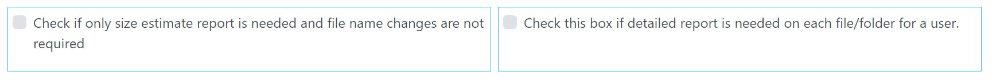
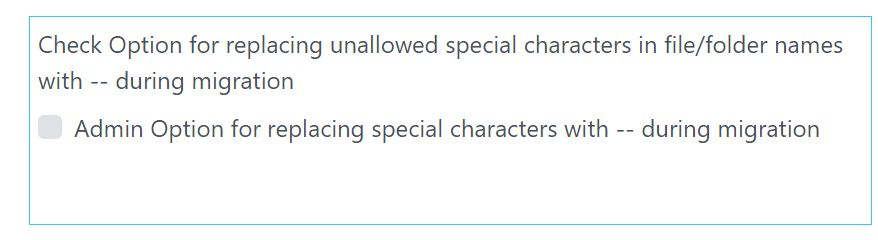

Remediation runs on the source tenant. Follow screen prompts to run remediations.
Ensure before running remediation Source is authenticated.
Remediation page can address two key pre-migration objectives:
Use below two option to generate either a summary report or detailed report
Using remediation tab detailed reports can be generated on each files in excel for each user requiring migration. This is a recommended step to ensure initial repository of detailed files/folders are created for any cross-checks after the migration process.
If replacing file special character in filenames is not opted on this page, there is an option on admin page that should be enabled to allow replacing special characters by – else files having special characters may run into migration issues.
